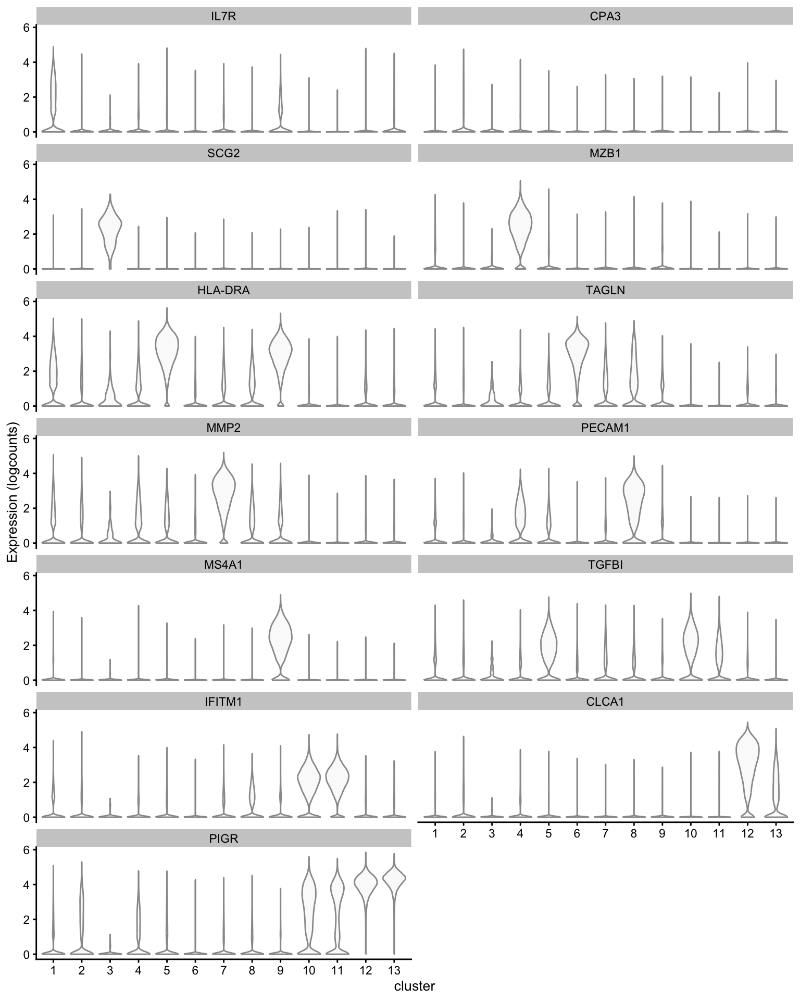
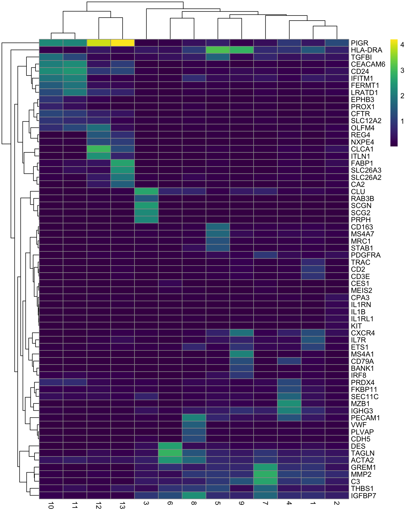
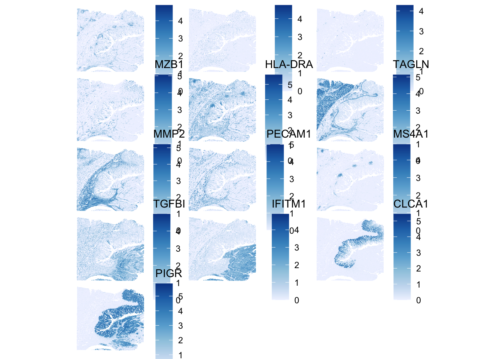
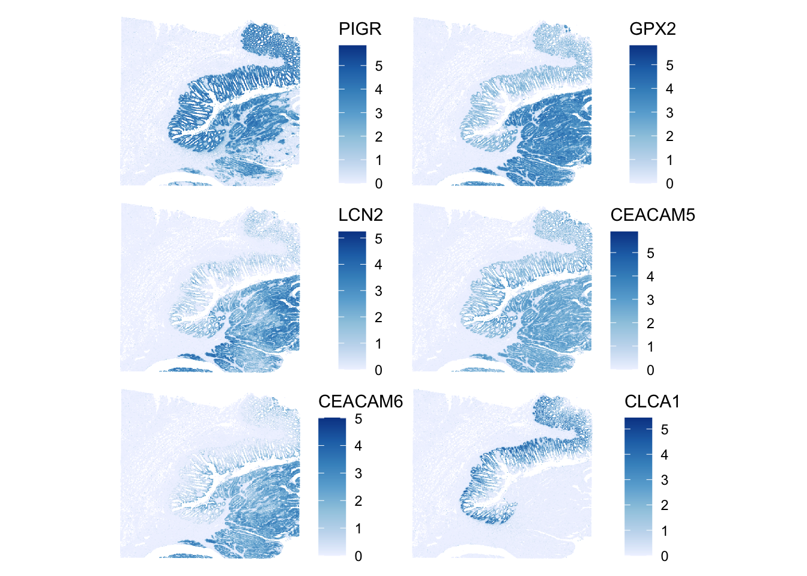
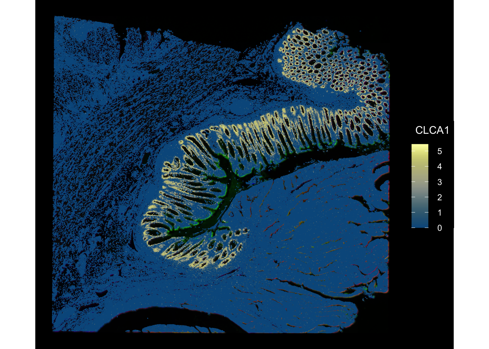
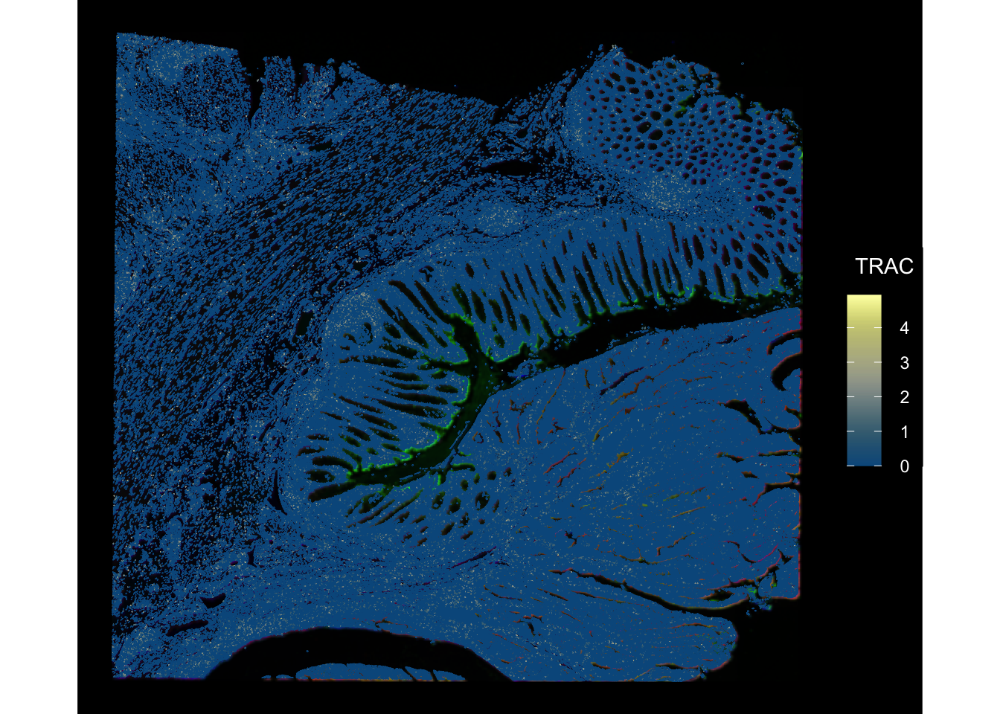
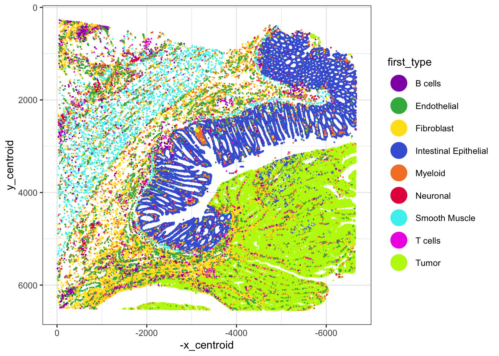
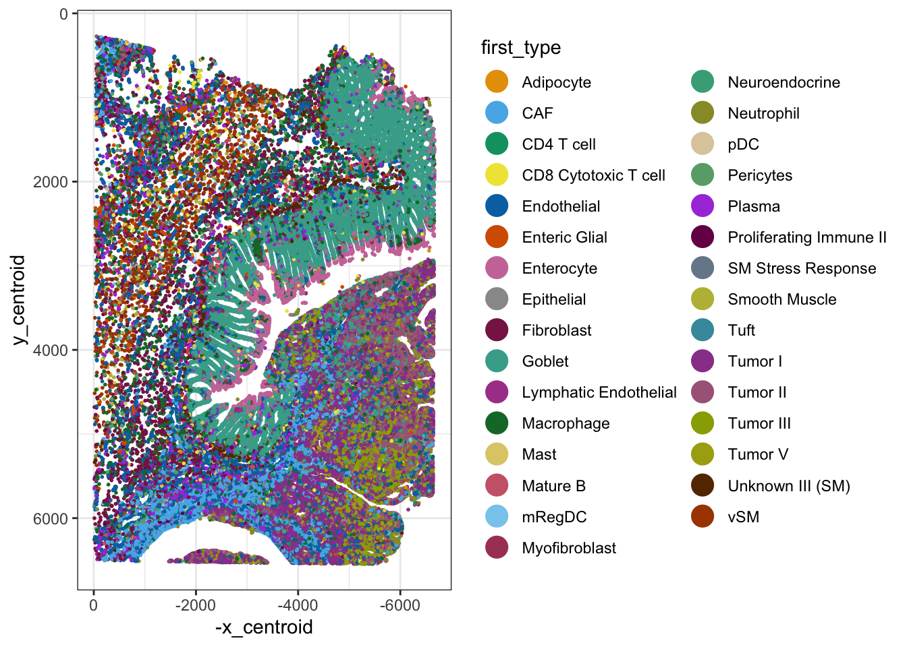
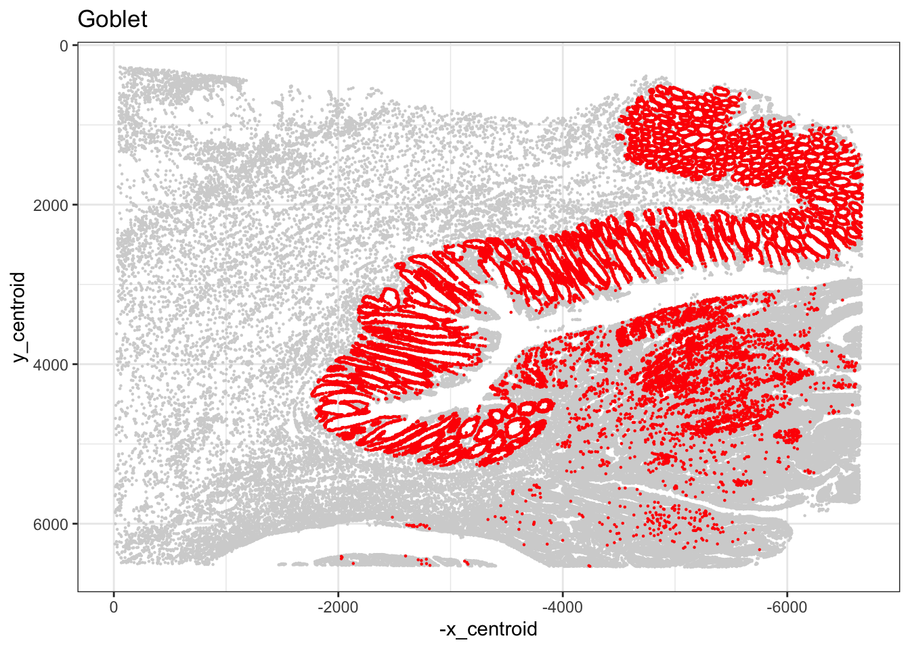

Last updated: 2024-11-20
Checks: 7 0
Knit directory: asi_spatial_workshop_2024/
This reproducible R Markdown analysis was created with workflowr (version 1.7.1). The Checks tab describes the reproducibility checks that were applied when the results were created. The Past versions tab lists the development history.
Great! Since the R Markdown file has been committed to the Git repository, you know the exact version of the code that produced these results.
Great job! The global environment was empty. Objects defined in the global environment can affect the analysis in your R Markdown file in unknown ways. For reproduciblity it’s best to always run the code in an empty environment.
The command set.seed(20240925) was run prior to running
the code in the R Markdown file. Setting a seed ensures that any results
that rely on randomness, e.g. subsampling or permutations, are
reproducible.
Great job! Recording the operating system, R version, and package versions is critical for reproducibility.
Nice! There were no cached chunks for this analysis, so you can be confident that you successfully produced the results during this run.
Great job! Using relative paths to the files within your workflowr project makes it easier to run your code on other machines.
Great! You are using Git for version control. Tracking code development and connecting the code version to the results is critical for reproducibility.
The results in this page were generated with repository version e5a7744. See the Past versions tab to see a history of the changes made to the R Markdown and HTML files.
Note that you need to be careful to ensure that all relevant files for
the analysis have been committed to Git prior to generating the results
(you can use wflow_publish or
wflow_git_commit). workflowr only checks the R Markdown
file, but you know if there are other scripts or data files that it
depends on. Below is the status of the Git repository when the results
were generated:
Ignored files:
Ignored: .Rproj.user/
Ignored: stomics/
Ignored: visium/
Untracked files:
Untracked: RCTD_Plots/
Untracked: xenium/
Note that any generated files, e.g. HTML, png, CSS, etc., are not included in this status report because it is ok for generated content to have uncommitted changes.
These are the previous versions of the repository in which changes were
made to the R Markdown (analysis/Xenium_Part3.Rmd) and HTML
(docs/Xenium_Part3.html) files. If you’ve configured a
remote Git repository (see ?wflow_git_remote), click on the
hyperlinks in the table below to view the files as they were in that
past version.
| File | Version | Author | Date | Message |
|---|---|---|---|---|
| Rmd | e5a7744 | Cathal King | 2024-11-20 | updating Xenium analysis files |
se <- readRDS(file = "xenium/data/se_clust.rds")findMarkers function.TGFBI is a marker related to SPP1+ macrophages.PIGR gene is identified as a marker for goblet
cells and enterocytes.PECAM1 is used to gain a detailed understanding of the
cellular landscape in specific regions of the TME and is used as a
marker gene for endothelial cells.# run test
markers <- findMarkers(se, groups = colData(se)$cluster,
test.type = "wilcox", pval.type = "all", direction = "up")
# plot markers per cluster
genes_use <- vapply(markers, function(x) rownames(x)[1], FUN.VALUE = character(1))
y <- plotExpression(se, genes_use, x = "cluster", point_fun = function(...) list())
y
# plot clusters
f <- plotSpatialFeature(se, "cluster", colGeometryName = "cellSeg", pointsize = 1.4) + ggtitle("Leiden gene expression clustering")
# plot heatmap
genes_use2 <- unique(unlist(lapply(markers, function(x) rownames(x)[1:5])))
plotGroupedHeatmap(se, genes_use2, group = "cluster", colour = scales::viridis_pal()(100))
CLCA1 as one of the marker genes for
goblet cells within the colon tissue.plotSpatialFeature(se, genes_use, colGeometryName = "centroids", ncol = 3,
pointsize = 2, scattermore = TRUE)
CEACAM5 and CEACAM6 as a
marker gene for tumour cells in CRC samples. This implies that CEACAM5
exhibits specific and reliable expression patterns in tumour cells,
making it useful for identifying these cells within the complex tissue
microenvironment (TME)# calculate spatial neighbourhood graph
colGraph(se, "knn") <- findSpatialNeighbors(se,
method = "knearneigh",
k = 5)
#plotColGraph(se, colGraphName = "knn")
se <- runMoransI(se, colGraphName = "knn", BPPARAM = MulticoreParam(2))
# get top
top_moran <- rownames(se)[order(rowData(se)$moran_p5, decreasing = TRUE)[1:6]]
# visualise
plotSpatialFeature(se, top_moran, colGeometryName = "centroids",
scattermore = TRUE, ncol = 2, pointsize = 1.5)
plotSpatialFeature function.rownames(se)# CLCA1
plotSpatialFeature(se, "CLCA1", colGeometryName = "cellSeg",
image_id = "morphology_focus",
fill = NA, aes_use = "color", linewidth = 0.15,
tx_fixed = list(color = "lightgray"),
channel = 3:1, dark = TRUE, normalize_channels = TRUE)
# TRAC
plotSpatialFeature(se, "TRAC", colGeometryName = "cellSeg",
image_id = "morphology_focus",
fill = NA, aes_use = "color", linewidth = 0.15,
tx_fixed = list(color = "lightgray"),
channel = 3:1, dark = TRUE, normalize_channels = TRUE)
Annotate Xenium data with matched, annotated single-cell RNA-seq data
Use the RCTD method implemented in the spacexr
package
Read in matched single-cell data
add meta-data containing cell type annotations to single-cell object
Run RCTD pipeline
Add RCTD outputs to tissue positions (cells.csv) Xenium file
Plot and examine RCTD results.
RCTD results are already generated and are stored in an RDS file. Read in and add to Xenium cells.csv file and plot.
After RCTD is ran:
the first_type column gives the first cell type
predicted on the bead (for all spot_class conditions except
“reject”)
# read in the RCTD results (calculated prior)
RCTD <- readRDS(file = "xenium/data/RCTD_results.rds")
# read in cell locations file from Xenium raw data bundle
# gunzip("xenium/raw/cells.csv.gz")
# cell locations from cells.csv file
cells_pos <- read.csv("xenium/raw/cells.csv",
header = TRUE, row.names=1)
# merge RCTD de-convolution results to Xenium cell positions file
head(cells_pos) x_centroid y_centroid transcript_counts control_probe_counts
aaaadchh-1 493.6353 2310.994 56 0
aaaaglla-1 499.8276 2321.825 51 0
aaaanjng-1 490.4425 2319.039 45 0
aaabakie-1 498.2829 2315.627 37 0
aaabalkl-1 486.3413 2311.812 112 0
aaabbekk-1 516.1199 2340.094 73 0
control_codeword_counts unassigned_codeword_counts
aaaadchh-1 0 0
aaaaglla-1 0 0
aaaanjng-1 0 0
aaabakie-1 0 0
aaabalkl-1 0 0
aaabbekk-1 0 0
deprecated_codeword_counts total_counts cell_area nucleus_area
aaaadchh-1 0 56 49.98797 31.33844
aaaaglla-1 0 51 44.52406 25.82938
aaaanjng-1 0 45 54.00688 33.68656
aaabakie-1 0 37 49.44610 31.33844
aaabalkl-1 0 112 74.23688 35.76375
aaabbekk-1 0 73 56.35500 30.20953annotation.df <- RCTD@results$results_df
head(annotation.df) spot_class first_type second_type first_class second_class
aaabalkl-1 singlet T cells Fibroblast FALSE FALSE
aaahlhbp-1 singlet T cells Smooth Muscle FALSE FALSE
aaakckea-1 singlet T cells Smooth Muscle FALSE FALSE
aaakffjl-1 singlet Fibroblast T cells FALSE FALSE
aaapbmen-1 singlet Myeloid B cells FALSE FALSE
aaapljid-1 singlet Myeloid Fibroblast FALSE FALSE
min_score singlet_score conv_all conv_doublet
aaabalkl-1 125.5928 137.7852 TRUE TRUE
aaahlhbp-1 135.8409 140.3838 TRUE TRUE
aaakckea-1 117.6264 127.4931 TRUE TRUE
aaakffjl-1 147.5117 160.0963 TRUE TRUE
aaapbmen-1 169.0018 174.8787 TRUE TRUE
aaapljid-1 133.3394 142.4714 TRUE TRUE# combine cell positions and denconvolution results
cells_pos <- cells_pos[rownames(annotation.df),]
cells_pos <- cbind(cells_pos, annotation.df)
head(cells_pos) x_centroid y_centroid transcript_counts control_probe_counts
aaabalkl-1 486.3413 2311.812 112 0
aaahlhbp-1 440.7468 3220.111 119 0
aaakckea-1 426.7924 2725.387 126 0
aaakffjl-1 428.7641 2729.976 145 0
aaapbmen-1 813.1482 4849.892 156 0
aaapljid-1 829.1583 4794.916 116 0
control_codeword_counts unassigned_codeword_counts
aaabalkl-1 0 0
aaahlhbp-1 0 0
aaakckea-1 0 0
aaakffjl-1 0 0
aaapbmen-1 0 0
aaapljid-1 0 0
deprecated_codeword_counts total_counts cell_area nucleus_area
aaabalkl-1 0 112 74.23688 35.76375
aaahlhbp-1 0 119 70.89532 41.09219
aaakckea-1 0 126 49.80735 NaN
aaakffjl-1 0 145 96.22797 39.06016
aaapbmen-1 0 156 75.41094 44.20797
aaapljid-1 0 116 52.20063 24.61016
spot_class first_type second_type first_class second_class
aaabalkl-1 singlet T cells Fibroblast FALSE FALSE
aaahlhbp-1 singlet T cells Smooth Muscle FALSE FALSE
aaakckea-1 singlet T cells Smooth Muscle FALSE FALSE
aaakffjl-1 singlet Fibroblast T cells FALSE FALSE
aaapbmen-1 singlet Myeloid B cells FALSE FALSE
aaapljid-1 singlet Myeloid Fibroblast FALSE FALSE
min_score singlet_score conv_all conv_doublet
aaabalkl-1 125.5928 137.7852 TRUE TRUE
aaahlhbp-1 135.8409 140.3838 TRUE TRUE
aaakckea-1 117.6264 127.4931 TRUE TRUE
aaakffjl-1 147.5117 160.0963 TRUE TRUE
aaapbmen-1 169.0018 174.8787 TRUE TRUE
aaapljid-1 133.3394 142.4714 TRUE TRUEannotation.df <- annotation.df[(annotation.df$spot_class != "reject"),]
# check
table(cells_pos$spot_class)
reject singlet doublet_certain doublet_uncertain
820 98259 5133 966 table(cells_pos$first_type)
B cells Endothelial Fibroblast
2773 7169 8646
Intestinal Epithelial Myeloid Neuronal
25108 4767 507
Smooth Muscle T cells Tumor
2456 1855 51897 table(cells_pos$second_type)
B cells Endothelial Fibroblast
27767 5190 8800
Intestinal Epithelial Myeloid Neuronal
28793 9463 8914
Smooth Muscle T cells Tumor
3822 6026 6403 # plot
options(repr.plot.width=20, repr.plot.height=6)
l <- ggplot()+
geom_point(cells_pos, mapping=aes(x=-x_centroid, y=y_centroid,color=first_type),
stroke=0, size=.8)+
scale_color_manual(values=c('#911eb4', '#3cb44b', '#ffe119', '#4363d8', '#f58231',
'#e6194b', '#46f0f0', '#f032e6', '#bcf60c', '#fabebe',
'#008080', '#e6beff', '#9a6324', '#fffac8', '#800000',
'#aaffc3', '#808000', '#ffd8b1', '#000075', '#808080')) +
guides(colour = guide_legend(override.aes = list(size=8)))+
scale_x_reverse()+scale_y_reverse()+
theme_bw()
l
# generate an interactive plot with plotly
# ggplotly(l)
## results
# “singlet” (1 cell type on pixel),
# “doublet_certain” (2 cell types on pixel),
# “doublet_uncertain” (2 cell types on pixel, but only confident of 1),
# “reject” (no prediction given for pixel).# read in the RCTD level 2 results (calculated prior)
RCTD_level2 <- readRDS(file = "xenium/data/RCTD_level2.rds")
# read in cell locations file from Xenium raw data bundle
# gunzip("xenium/raw/cells.csv.gz")
# cell locations from cells.csv file
cells_pos <- read.csv("xenium/raw/cells.csv",
header = TRUE, row.names=1)
# merge RCTD de-convolution results to Xenium cell positions file
head(cells_pos) x_centroid y_centroid transcript_counts control_probe_counts
aaaadchh-1 493.6353 2310.994 56 0
aaaaglla-1 499.8276 2321.825 51 0
aaaanjng-1 490.4425 2319.039 45 0
aaabakie-1 498.2829 2315.627 37 0
aaabalkl-1 486.3413 2311.812 112 0
aaabbekk-1 516.1199 2340.094 73 0
control_codeword_counts unassigned_codeword_counts
aaaadchh-1 0 0
aaaaglla-1 0 0
aaaanjng-1 0 0
aaabakie-1 0 0
aaabalkl-1 0 0
aaabbekk-1 0 0
deprecated_codeword_counts total_counts cell_area nucleus_area
aaaadchh-1 0 56 49.98797 31.33844
aaaaglla-1 0 51 44.52406 25.82938
aaaanjng-1 0 45 54.00688 33.68656
aaabakie-1 0 37 49.44610 31.33844
aaabalkl-1 0 112 74.23688 35.76375
aaabbekk-1 0 73 56.35500 30.20953annotation.df <- RCTD_level2@results$results_df
head(annotation.df) spot_class first_type second_type
aaabalkl-1 singlet CD8 Cytotoxic T cell Fibroblast
aaahlhbp-1 singlet CD8 Cytotoxic T cell vSM
aaakckea-1 singlet Proliferating Immune II vSM
aaakffjl-1 doublet_certain Fibroblast Proliferating Immune II
aaapbmen-1 singlet Macrophage Plasma
aaapljid-1 singlet Macrophage Fibroblast
first_class second_class min_score singlet_score conv_all
aaabalkl-1 FALSE FALSE 131.8147 151.1508 TRUE
aaahlhbp-1 FALSE FALSE 152.3676 161.0821 TRUE
aaakckea-1 FALSE FALSE 145.1528 162.2965 TRUE
aaakffjl-1 FALSE FALSE 168.4984 192.9901 TRUE
aaapbmen-1 FALSE FALSE 198.8039 210.0786 TRUE
aaapljid-1 FALSE FALSE 150.7818 164.1528 TRUE
conv_doublet
aaabalkl-1 TRUE
aaahlhbp-1 TRUE
aaakckea-1 TRUE
aaakffjl-1 TRUE
aaapbmen-1 TRUE
aaapljid-1 TRUE# merge
cells_pos <- cells_pos[rownames(annotation.df),]
cells_pos <- cbind(cells_pos, annotation.df)
head(cells_pos) x_centroid y_centroid transcript_counts control_probe_counts
aaabalkl-1 486.3413 2311.812 112 0
aaahlhbp-1 440.7468 3220.111 119 0
aaakckea-1 426.7924 2725.387 126 0
aaakffjl-1 428.7641 2729.976 145 0
aaapbmen-1 813.1482 4849.892 156 0
aaapljid-1 829.1583 4794.916 116 0
control_codeword_counts unassigned_codeword_counts
aaabalkl-1 0 0
aaahlhbp-1 0 0
aaakckea-1 0 0
aaakffjl-1 0 0
aaapbmen-1 0 0
aaapljid-1 0 0
deprecated_codeword_counts total_counts cell_area nucleus_area
aaabalkl-1 0 112 74.23688 35.76375
aaahlhbp-1 0 119 70.89532 41.09219
aaakckea-1 0 126 49.80735 NaN
aaakffjl-1 0 145 96.22797 39.06016
aaapbmen-1 0 156 75.41094 44.20797
aaapljid-1 0 116 52.20063 24.61016
spot_class first_type second_type
aaabalkl-1 singlet CD8 Cytotoxic T cell Fibroblast
aaahlhbp-1 singlet CD8 Cytotoxic T cell vSM
aaakckea-1 singlet Proliferating Immune II vSM
aaakffjl-1 doublet_certain Fibroblast Proliferating Immune II
aaapbmen-1 singlet Macrophage Plasma
aaapljid-1 singlet Macrophage Fibroblast
first_class second_class min_score singlet_score conv_all
aaabalkl-1 FALSE FALSE 131.8147 151.1508 TRUE
aaahlhbp-1 FALSE FALSE 152.3676 161.0821 TRUE
aaakckea-1 FALSE FALSE 145.1528 162.2965 TRUE
aaakffjl-1 FALSE FALSE 168.4984 192.9901 TRUE
aaapbmen-1 FALSE FALSE 198.8039 210.0786 TRUE
aaapljid-1 FALSE FALSE 150.7818 164.1528 TRUE
conv_doublet
aaabalkl-1 TRUE
aaahlhbp-1 TRUE
aaakckea-1 TRUE
aaakffjl-1 TRUE
aaapbmen-1 TRUE
aaapljid-1 TRUEannotation.df <- annotation.df[(annotation.df$spot_class != "reject"),]
# check
table(cells_pos$spot_class)
reject singlet doublet_certain doublet_uncertain
25972 70165 4836 4205 table(cells_pos$first_type)
Adipocyte CAF CD4 T cell
129 4287 898
CD8 Cytotoxic T cell Endothelial Enteric Glial
934 5933 555
Enterocyte Epithelial Fibroblast
3702 72 2939
Goblet Lymphatic Endothelial Macrophage
24369 564 4272
Mast Mature B mRegDC
314 541 379
Myofibroblast Neuroendocrine Neutrophil
571 983 486
pDC Pericytes Plasma
88 1558 2489
Proliferating Immune II SM Stress Response Smooth Muscle
573 111 159
Tuft Tumor I Tumor II
298 25197 10676
Tumor III Tumor V Unknown III (SM)
7162 3487 436
vSM
1016 table(cells_pos$second_type)
Adipocyte CAF CD4 T cell
4017 2687 2092
CD8 Cytotoxic T cell Endothelial Enteric Glial
1844 1581 2507
Enterocyte Epithelial Fibroblast
1185 42 3064
Goblet Lymphatic Endothelial Macrophage
5947 1673 2392
Mast Mature B mRegDC
1236 1288 1141
Myofibroblast Neuroendocrine Neutrophil
2496 4494 1232
pDC Pericytes Plasma
916 2021 3770
Proliferating Immune II SM Stress Response Smooth Muscle
1489 784 596
Tuft Tumor I Tumor II
1469 7519 10674
Tumor III Tumor V Unknown III (SM)
14437 16657 2102
vSM
1826 # plot
# more cell labels means a bigger colour palette is needed
library(RColorBrewer)
# Choose a palette with enough colors
custom_palette <- c("#E69F00", "#56B4E9", "#009E73", "#F0E442", "#0072B2", "#D55E00", "#CC79A7", "#999999", "#882255",
"#44AA99", "#AA4499", "#117733", "#DDCC77", "#CC6677", "#88CCEE", "#AA4466", "#44AA88", "#999933",
"#DDCCAA", "#66AA77", "#AA44DD", "#771155", "#778899", "#BBBB44", "#4499AA", "#994499", "#AA6688",
"#99AA00", "#AAAA11", "#663300", "#AA4400")
# plot
options(repr.plot.width=8, repr.plot.height=8)
t <- ggplot()+
geom_point(cells_pos, mapping=aes(x=-x_centroid, y=y_centroid,color=first_type),
stroke=0, size=1)+
scale_color_manual(values=custom_palette) +
guides(colour = guide_legend(override.aes = list(size=6)))+
scale_x_reverse()+scale_y_reverse()+
theme_bw() + theme(legend.position = "right")
t
# plot just one cell identity of interest
cell_type <- "Goblet"
options(repr.plot.width=13, repr.plot.height=12)
ggplot()+
geom_point(cells_pos, mapping=aes(x=-x_centroid, y=y_centroid,),
stroke=0, size=.8, col="lightgrey")+
geom_point(cells_pos[(cells_pos$first_type==cell_type),],
mapping=aes(x=-x_centroid, y=y_centroid),
stroke=0, size=.8, col="red")+
scale_x_reverse()+scale_y_reverse()+
ggtitle(cell_type)+
theme_bw()
## Optional - further RCTD analysis
# results <- RCTD@results
# norm_weights = normalize_weights(results$weights)
# cell_type_names <- RCTD@cell_type_info$info[[2]]
# spatialRNA <- RCTD@spatialRNA
# resultsdir <- 'RCTD_Plots'
# dir.create(resultsdir)
# # plot
# plot_cond_occur(cell_type_names, resultsdir, norm_weights, spatialRNA)
# check PDF file
#plot_weights(cell_type_names, spatialRNA, resultsdir, norm_weights) Checkpoint
saveRDS(object = se, file = "xenium/data/se_final.rds")Seurat or
SingleCellExperiment object and a Xenium dataset. RCTD will
also work on other spatial transcriptomics platforms.# read in single-cell data
# seu <- readRDS(file = "data/seu_filtered_colon_paper.rds")
# sce <- as.SingleCellExperiment(x = seu)
## Run RCTD
# ref = seu
# query = se Xenium obj
## extract information to pass to the RCTD Reference function
# counts_sce <- assay(sce)
# cluster_sce <- as.factor(sce$Level1)
# names(cluster_sce) <- colnames(sce)
# nUMI_sce <- sce$nCount_originalexp
# names(nUMI_sce) <- colnames(sce)
# reference_sce <- Reference(counts_sce, cluster_sce, nUMI_sce)
#
# # set up query with the RCTD function SpatialRNA
# # use se Xenium object
#
# counts_se <- assay(se)
# coords <- spatialCoords(se)
# coords_df <- as.data.frame(coords)
# colnames(coords) <- c("x", "y")
# coords[is.na(colnames(coords))] <- NULL
# query_se <- SpatialRNA(coords_df, counts_se, colSums(counts_se))
# #
# RCTD <- create.RCTD(query_se, reference_sce, max_cores = 8)
# # doublet mode for Xenium data
# RCTD <- run.RCTD(RCTD, doublet_mode = "doublet")
# se$RCTD_annotations <- RCTD@results$results_df$first_type
# colData(se)$new_RCTD <- RCTD@results$results_df$first_type
#
#saveRDS(object = RCTD, file = "data/RCTD.rds")
sessionInfo()R version 4.4.0 (2024-04-24)
Platform: aarch64-apple-darwin20
Running under: macOS Sonoma 14.7.1
Matrix products: default
BLAS: /Library/Frameworks/R.framework/Versions/4.4-arm64/Resources/lib/libRblas.0.dylib
LAPACK: /Library/Frameworks/R.framework/Versions/4.4-arm64/Resources/lib/libRlapack.dylib; LAPACK version 3.12.0
locale:
[1] en_US.UTF-8/en_US.UTF-8/en_US.UTF-8/C/en_US.UTF-8/en_US.UTF-8
time zone: Australia/Adelaide
tzcode source: internal
attached base packages:
[1] stats4 stats graphics grDevices utils datasets methods
[8] base
other attached packages:
[1] RColorBrewer_1.1-3 spacexr_2.2.1
[3] plotly_4.10.4 scales_1.3.0
[5] terra_1.7-78 EBImage_4.48.0
[7] sf_1.0-19 bluster_1.16.0
[9] fs_1.6.5 scran_1.34.0
[11] BiocParallel_1.40.0 scater_1.34.0
[13] ggplot2_3.5.1 scuttle_1.16.0
[15] SingleCellExperiment_1.28.1 SummarizedExperiment_1.36.0
[17] Biobase_2.66.0 GenomicRanges_1.58.0
[19] GenomeInfoDb_1.42.0 IRanges_2.40.0
[21] S4Vectors_0.44.0 BiocGenerics_0.52.0
[23] MatrixGenerics_1.18.0 matrixStats_1.4.1
[25] RBioFormats_1.6.0 Voyager_1.8.1
[27] SpatialFeatureExperiment_1.8.2 workflowr_1.7.1
loaded via a namespace (and not attached):
[1] later_1.3.2 bitops_1.0-9
[3] tibble_3.2.1 R.oo_1.27.0
[5] lifecycle_1.0.4 doParallel_1.0.17
[7] edgeR_4.4.0 rprojroot_2.0.4
[9] processx_3.8.4 lattice_0.22-6
[11] magrittr_2.0.3 limma_3.62.1
[13] sass_0.4.9 rmarkdown_2.29
[15] jquerylib_0.1.4 yaml_2.3.10
[17] metapod_1.14.0 httpuv_1.6.15
[19] sp_2.1-4 cowplot_1.1.3
[21] DBI_1.2.3 abind_1.4-8
[23] zlibbioc_1.52.0 purrr_1.0.2
[25] R.utils_2.12.3 RCurl_1.98-1.16
[27] git2r_0.35.0 GenomeInfoDbData_1.2.13
[29] ggrepel_0.9.6 irlba_2.3.5.1
[31] pheatmap_1.0.12 units_0.8-5
[33] RSpectra_0.16-2 dqrng_0.4.1
[35] DelayedMatrixStats_1.28.0 codetools_0.2-20
[37] DropletUtils_1.26.0 DelayedArray_0.32.0
[39] xml2_1.3.6 tidyselect_1.2.1
[41] UCSC.utils_1.2.0 memuse_4.2-3
[43] farver_2.1.2 ScaledMatrix_1.14.0
[45] viridis_0.6.5 jsonlite_1.8.9
[47] BiocNeighbors_2.0.0 e1071_1.7-16
[49] iterators_1.0.14 foreach_1.5.2
[51] tools_4.4.0 ggnewscale_0.5.0
[53] Rcpp_1.0.13-1 glue_1.8.0
[55] gridExtra_2.3 SparseArray_1.6.0
[57] xfun_0.49 dplyr_1.1.4
[59] HDF5Array_1.34.0 withr_3.0.2
[61] fastmap_1.2.0 boot_1.3-31
[63] rhdf5filters_1.18.0 fansi_1.0.6
[65] spData_2.3.3 callr_3.7.6
[67] digest_0.6.37 rsvd_1.0.5
[69] R6_2.5.1 colorspace_2.1-1
[71] wk_0.9.4 scattermore_1.2
[73] jpeg_0.1-10 R.methodsS3_1.8.2
[75] utf8_1.2.4 tidyr_1.3.1
[77] generics_0.1.3 data.table_1.16.2
[79] class_7.3-22 httr_1.4.7
[81] htmlwidgets_1.6.4 S4Arrays_1.6.0
[83] whisker_0.4.1 spdep_1.3-6
[85] pkgconfig_2.0.3 scico_1.5.0
[87] rJava_1.0-11 gtable_0.3.6
[89] XVector_0.46.0 htmltools_0.5.8.1
[91] fftwtools_0.9-11 png_0.1-8
[93] SpatialExperiment_1.16.0 knitr_1.49
[95] rstudioapi_0.17.1 rjson_0.2.23
[97] proxy_0.4-27 cachem_1.1.0
[99] rhdf5_2.50.0 stringr_1.5.1
[101] KernSmooth_2.23-24 parallel_4.4.0
[103] vipor_0.4.7 s2_1.1.7
[105] pillar_1.9.0 grid_4.4.0
[107] vctrs_0.6.5 promises_1.3.0
[109] BiocSingular_1.22.0 beachmat_2.22.0
[111] sfheaders_0.4.4 cluster_2.1.6
[113] beeswarm_0.4.0 evaluate_1.0.1
[115] zeallot_0.1.0 magick_2.8.5
[117] cli_3.6.3 locfit_1.5-9.10
[119] compiler_4.4.0 rlang_1.1.4
[121] crayon_1.5.3 labeling_0.4.3
[123] classInt_0.4-10 ps_1.8.1
[125] getPass_0.2-4 ggbeeswarm_0.7.2
[127] stringi_1.8.4 viridisLite_0.4.2
[129] deldir_2.0-4 munsell_0.5.1
[131] lazyeval_0.2.2 tiff_0.1-12
[133] Matrix_1.7-1 patchwork_1.3.0
[135] sparseMatrixStats_1.18.0 Rhdf5lib_1.28.0
[137] statmod_1.5.0 igraph_2.1.1
[139] bslib_0.8.0